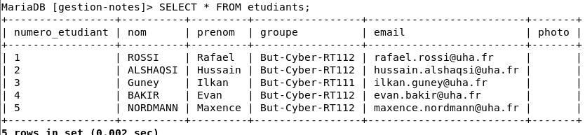

Démarche Réflexive
& Diagnostic
Analyse critique des pannes rencontrées et méthodologie de résolution
Résolution d'un problème de connexion (Connection Refused)
Incident #1
problème constaté : Lors des premiers tests, l'application Django ne parvenait pas
à se connecter à la base de données MariaDB, et affichait une erreur de type Connection refused.
Méthodologie de dépannage — Approche par couches OSI :
-
Validation Couche 3 (Réseau) : Nous avons d'abord testé la connexion réseau avec une commande
pingvers la VM de la base de données. Le test a réussi, prouvant que la VM Debian était bien connectée et joignable. -
Validation Couche 4 (Transport) : Nous avons ensuite vérifié si le port de la base de données (
3306) acceptait les connexions. Le serveur a rejeté la demande, ce qui prouvait que le problème venait de la configuration du logiciel et non du réseau. -
Analyse de la configuration MariaDB : En ouvrant le fichier de configuration (
50-server.cnf), nous avons remarqué la lignebind-address = 127.0.0.1. Cette option bloquait toutes les connexions venant de l'extérieur et n'autorisait que la machine locale. -
Correction appliquée : Nous avons remplacé cette ligne par
bind-address = 0.0.0.0pour permettre à MariaDB d'écouter toutes les cartes réseau. Après un redémarrage du service, la connexion avec Django s'est faite immédiatement.
Vérification du stockage persistant
Audit #2Pour s'assurer que les données des formulaires (élèves et notes) étaient bien enregistrées sur le serveur distant et non dans la base SQLite locale de test sur Windows, nous avons effectué une vérification directement sur la VM MariaDB.
SELECT * FROM app_note;. Les lignes affichées confirment que les informations sont correctement stockées sur l'infrastructure distante.

Bilan sur le projet et ce qu'on a appris
Ce projet de SAÉ a montré que les erreurs de connexion ne viennent pas forcément d'un câble mal branché ou d'une mauvaise adresse IP. Utiliser le **modèle OSI** pour chercher une panne étape par étape permet de trouver le problème beaucoup plus vite sans perdre de temps.
On a aussi compris qu'il faut faire très attention à la **configuration des serveurs**.
Une simple ligne comme bind-address peut bloquer complètement l'accès à la base de données si elle est mal réglée.
Enfin, travailler avec plusieurs machines virtuelles a demandé de **bien s'organiser en équipe**, surtout pour partager les accès à la base de données. C'était un très bon exercice pour comprendre comment on gère la sécurité et les droits des utilisateurs dans une entreprise.